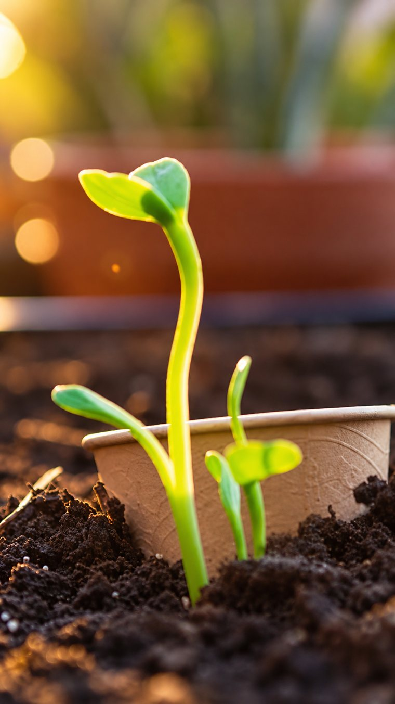
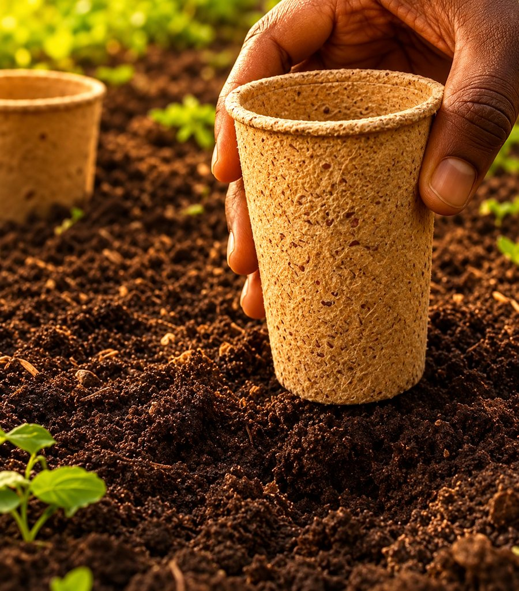
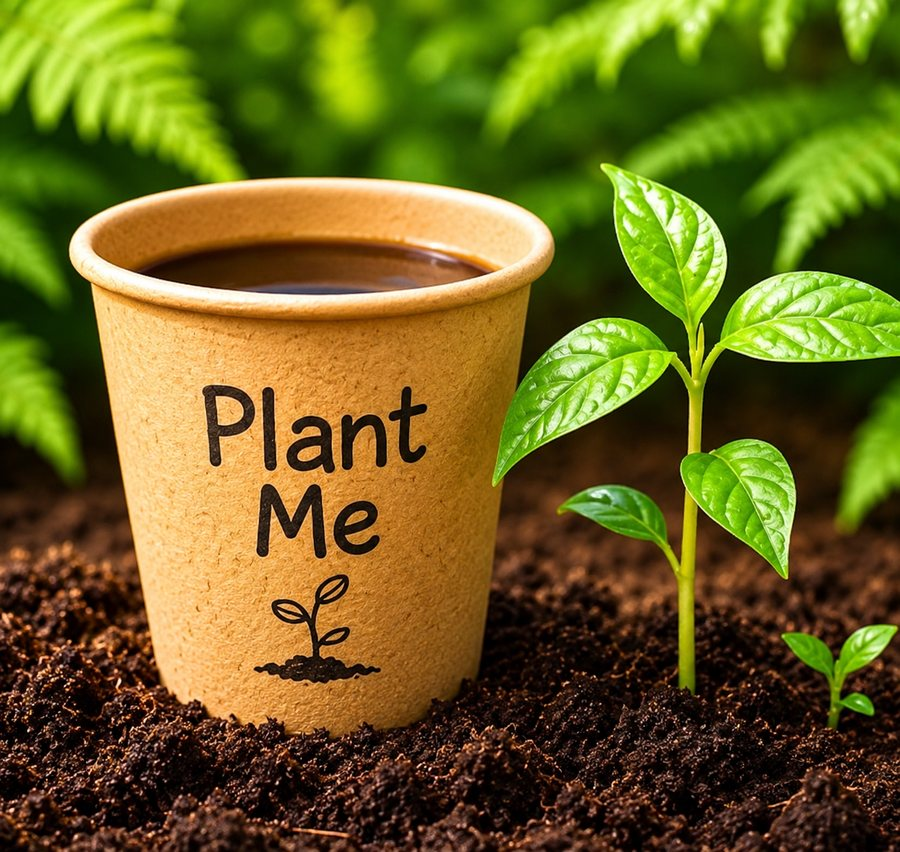

Every cup we give out has ten seeds embedded in it. The cup is made from plant fibre, so it breaks down in the soil while the seeds sprout.
Finish your drink and bury the cup in soil, in a garden or a pot. Keep it watered and the seeds grow as the cup breaks down around them.
Packaging, charcoal and land clearing cost Zimbabwe trees and plant life. This is how we return some of it: every cup is a chance to grow something back.
Biodegradable cups, boxes and bags, stocked in Harare.